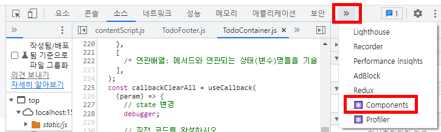

React CRA 을 사용하여 ToDo 어플리케이션을 만들어 본다.
* CRA 는 create react app 의 약자.
##################################
1. 작업 개요
##################################
##################################
2. 프로젝트 생성 작업
소요시간: 20분
##################################
"rt20.create-react-project.html"을 참조하여 프로젝트를 만들거나
기존에 만들어진 reactprj01 프로젝트에 추가하시오.
##################################
3. 서버 시작
##################################
$ ls # package.json 파일 과 node_modules 폴더가 보이는지 확인
$ npm install # package.json 에 등록된 라이브러리(모듈) 재설치. node_modules 폴더가 생성됨
$ npm run start # package.json 보이면 서버 실행
##################################
4. 앱 요구사항
##################################
0. 퍼블리싱된 화면 만들기.
"1차/todo.html" 파일 참조
1. 컴포넌트 트리 만들기
1-1. TodoContainer 컴포넌트
1-2. TodoHeader 컴포넌트
1-3. TodoFooter 컴포넌트
1-4. TodoList 컴포넌트
1-5. TodoInput 컴포넌트
2. TodoContainer 컴포넌트 만들기
2-1. TodoContainer 컴포넌트 만들기
2-3. TodoContainer 컴포넌트의 JSX 에 사용자태그(컴포넌트 태그) 기술
3. TodoHeader 컴포넌트 만들고 컴포넌트 등록하고 태그 작성한다.
3.1 TodoHeader 컴포넌트 만든다.
3.3 TodoHeader 컴포넌트 태그를 Todo 컴포넌트의 JSX 에 등록한다.
4. TodoFooter 컴포넌트 만들고 컴포넌트 등록하고 태그 작성한다.
4.1 TodoFooter 컴포넌트 만든다.
4.3 TodoFooter 컴포넌트 태그를 Todo 컴포넌트의 JSX 에 등록한다.
4.4 TodoFooter 컴포넌트 버튼 클릭시 콜백 메서드 호출 기능을 추가한다.
5. TodoList 컴포넌트 만들고 컴포넌트 등록하고 태그 작성한다.
5.1 TodoList 컴포넌트 만든다.
5.3 TodoList 컴포넌트 태그를 Todo 컴포넌트의 JSX 에 등록한다.
5.4 TodoList 컴포넌트 콜백 메서드 호출 기능을 작성한다.
6. TodoInput 컴포넌트 만들고 컴포넌트 등록하고 태그 작성한다.
6.1 TodoInput 컴포넌트 만든다.
6.3 TodoInput 컴포넌트 태그를 Todo 컴포넌트의 JSX 에 등록한다.
6.4 TodoInput 컴포넌트 버튼 클릭시 콜백 메서드 호출 기능을 추가한다.
6.5 TodoInput 컴포넌트의 input 태그에 값을 초기화
##################################
5. 기능 설명
##################################
선 학습 필요 사항:
array.map() 사용법
array.filter() 사용법
array.reduce() 사용법
todoItems 는 아래와 같다고 가정한다
todoItems = [
{ id: 1, todo: "영화보기", done: false },
{ id: 2, todo: "주말 산책", done: true },
{ id: 3, todo: "ES6 학습", done: false },
{ id: 4, todo: "잠실 야구장", done: false }
]
methods 작업 순서
. clearAll() { }
. checked(done) { }
// done 이 true 이면 'checked' 를 아니면 null 을 반환.
. doneToggle(id) { } ==> ap03-11.객체배열.html 참조
. removeTodo(id) { } ==> ap03-11.객체배열.html 참조
. addTodo() { } ==> ap03-11.객체배열.html 참조
// map과 reduce 를 사용하여 max id 구하기 ==> newid 만들기
// todoItems 추가할 객체 만들기
// 배열에 추가
// 입력된 값 초기화
##################################
11. 사이트 전체 설정
##################################
프로젝트의 폴더 구조
└─ public/index.html 을 열고 아래의 코드를 추가
11-1. viewport 설정
<meta name="viewport" content="width=device-width, initial-scale=1.0" />
11-2. favicon 설정
<link rel="icon" href="%PUBLIC_URL%/favicon.ico" />
<link rel="shortcut icon" href="%PUBLIC_URL%/favicon.ico" />
11-3. 1차 폴더의 reset.css 파일을 public 폴더로 복사
11-4. index.html 에 css 파일 설정
<link rel="stylesheet" href="%PUBLIC_URL%/reset.css" />
11-5. fontawesome 폰트 설정
<link rel="stylesheet" href="https://use.fontawesome.com/releases/v5.0.12/css/all.css" />
11-6. ubuntu 폰트 설정
<link rel="stylesheet" href="https://fonts.googleapis.com/css?family=Ubuntu" />
##################################
12. todo 프로젝트에 관련된 폴더와 컴포넌트 파일 추가
##################################
12-1. todo 컴포넌트 폴더 및 파일 생성
$ ls # packages.json 이 보이는지 확인.
$ mkdir -p ./src/containers/todo
$ touch ./src/containers/todo/TodoContainer.js
$ ls ./src/containers/todo/ # 생성된 파일 목록 확인
$ mkdir ./src/containers/todo/components
$ touch ./src/containers/todo/components/TodoHeader.js \
./src/containers/todo/components/TodoInput.js \
./src/containers/todo/components/TodoList.js \
./src/containers/todo/components/TodoFooter.js
$ ls ./src/containers/todo/components/ # 생성된 파일 목록 확인
12-2. 사용하지 않는 파일 삭제
$ rm src/App.test.js \
src/logo.svg
12-3. 실행된 화면 확인.
에러가 있으면 해결하시오
##################################
13. 라우팅 설정
1. BrowserRouter 추가
2. 라우팅 설정
3. 링크(메뉴) 설정
4. 스타일링 설정
##################################
13-1. 라우팅 관련 폴더 및 파일 생성
$ mkdir -p ./src/pages
$ touch ./src/pages/PageHome.js
$ mkdir -p ./src/containers/home
$ touch ./src/containers/home/HomeContainer.js
13-2. BrowserRouter 추가
작업파일: src/index.js 수정
변경 전
const root = ReactDOM.createRoot(document.getElementById('root'));
root.render(
<React.StrictMode>
<App />
</React.StrictMode>
);
변경 후
import { BrowserRouter } from 'react-router-dom';
const root = ReactDOM.createRoot(document.getElementById('root'));
root.render(
<React.StrictMode>
<BrowserRouter>
<App />
</BrowserRouter>
</React.StrictMode>
);
13-3. 라우팅 설정
작업파일: src/App.js 수정
import PageHome from './pages/PageHome';
function App() {
return (
<StyledPageHome>
<PageHome />
</StyledPageHome>
);
}
13-4. 실행 화면 확인하고 개발자 모드에서 오류 확인
==> 빈 화면이 나오면 정상.
13-5. HomeContainer 컴포넌트 파일 생성
$ mkdir -p ./src/containers/home
$ touch src/containers/home/HomeContainer.js
13-6. 라우팅 폴더 및 PageHome 컴포넌트 만들기
$ mkdir -p ./src/pages
$ touch src/pages/PageHome.js
13-7. PageHome 에 라우팅 설정
작업파일: src/pages/PageHome.js
import { Routes, Route, NavLink } from 'react-router-dom';
import CompStyle from '../containers/styled/CompStyle';
import CrudContainer from '../components/crud/CrudContainer';
import HomeContainer from '../containers/home/HomeContainer';
import TodoContainer from '../containers/todo/TodoContainer';
<StyledPageHome>
<Routes>
<Route path={'/style'} element={<CompStyle />}></Route>
<Route path={'/crud'} element={<CrudContainer />}></Route>
<Route path={'/todo'} element={<TodoContainer />}></Route>
<Route path={'/'} element={<HomeContainer />}></Route>
<Route path={'*'} to={'/'}></Route>
</Routes>
</StyledPageHome>
13-8. PageHome 에 라우팅 설정
13-8. PageHome 에 링크 설정
작업파일: src/pages/PageHome.js
변경 전
<StyledPageHome>
<Routes>
<Route path={'/style'} element={<CompStyle />}></Route>
<Route path={'/crud'} element={<CrudContainer />}></Route>
<Route path={'/todo'} element={<TodoContainer />}></Route>
<Route path={'/'} element={<HomeContainer />}></Route>
<Route path={'*'} to={'/'}></Route>
</Routes>
</StyledPageHome>
변경 후
<StyledPageHome>
<div>
<ul>
<li>
<NavLink to={''}>Home</NavLink>
</li>
<li>
<NavLink to={'/style'}>Style</NavLink>
</li>
<li>
<NavLink to={'/crud'}>Crud</NavLink>
</li>
<li>
<NavLink to={'/todo'}>Todo</NavLink>
</li>
</ul>
</div>
<Routes>
<Route path={'/style'} element={<CompStyle />}></Route>
<Route path={'/crud'} element={<CrudContainer />}></Route>
<Route path={'/todo'} element={<TodoContainer />}></Route>
<Route path={'/'} element={<HomeContainer />}></Route>
<Route path={'*'} to={'/'}></Route>
</Routes>
</StyledPageHome>
13-9. PageHome 에 스타일링 설정
작업파일: src/pages/PageHome.js
변경 전
const StyledPageHome = styled.div`
/* styled 설정. https://styled-components.com/docs/basics#adapting-based-on-props */
`;
변경 후
const StyledPageHome = styled.div`
/* styled 설정. https://styled-components.com/docs/basics#adapting-based-on-props */
/* NavLink 컴포넌트에서 사용되는 CSS */
.active {
background-color: aqua;
}
.inactive {
background-color: none;
}
`;
##################################
21. TodoContainer 컴포넌트 구현
##################################
step 21-1. src/containers/todo/TodoContainer.js 파일 만들기
$ touch src/containers/todo/TodoContainer.js
step 21-2. src/containers/todo/TodoContainer.js 의 JSX 를 기능 완성
1차/todo.html 내용을 참고하여 TodoContainer.js 에 JSX를 만드시오
step 21-3. JSX 수정
html ===> JSX 변환 규칙
. class 속성 ===> className
. for 속성 ===> htmlFor
. value 속성 ===> defaultValue
step 21-4. 실행 화면 확인
step 21-5. styled-components 를 이용하여 TodoContainer 컴포넌트 스타일링하기
1차/style.css 파일의 css 코드를 StyledTodoContainer 에 추가한다.
step 21-6. TodoContainer 의 JSX 에서 modal 창 숨기기 기능 추가하기
변경 전: <div class="modal-mask">
변경 후: <div class="modal-mask" style={{ display: 'none' }}>
css 를 javascript 로 바꾸는 변환 규칙
1. 대문자 로 바꾼다.명칭은 카멜 표기법 사용. 왜냐하면 자바스립트이기 때문.
예시) 대시 표기법(CSS) ==> 카멜 표기법(JS)
font-size ==> fontSize
background-color ==> backgroundColor
2. 값을 문자열로 바꾼다.
3. 구분자는 세미콜론 대신 콤마 로 바꾼다. 왜냐하면 자바스크립트 객체기이기 때문.
##################################
step 22. TodoContainer 에 공유 상태값 만들기
##################################
step 22-1. TodoContainer 에 공유 상태값 todoItems 만들기
const [todoItems, setTodoItems] = useState([
{ id: 1, todo: '영화보기', done: false },
{ id: 2, todo: '주말 산책', done: true },
{ id: 3, todo: 'ES6 학습', done: false },
{ id: 4, todo: '잠실 야구장', done: false }
]);
##################################
step 23. TodoHeader 컴포넌트 만들고 컴포넌트 등록하고 태그 작성한다.
소요시간: 5분
##################################
step 23-01. TodoHeader 컴포넌트 만든다.
step 23-02. TodoHeader JSX 를 작성한다.
. class 속성 ===> className
. for 속성 ===> htmlFor
. value 속성 ===> defaultValue
css 표기법을 javascript 프로퍼티 로 바꾸는 방법
1. 대문자 로 바꾼다.명칭은 카멜 표기법 사용. 왜냐하면 자바스립트이기 때문.
예시) 대시 표기법(CSS) ==> 카멜 표기법(JS)
font-size ==> fontSize
background-color ==> backgroundColor
2. 값을 문자열로 바꾼다.
3. 구분자는 세미콜론 대신 콤마 로 바꾼다. 왜냐하면 자바스크립트 객체기이기 때문.
<header>
<h1>TODO it! Component</h1>
</header>
step 23-03. TodoContainer 컴포넌트의 JSX 에
TodoHeader 컴포넌트 태그를 추가한다.
<TodoHeader></TodoHeader>
step 23-04. TodoHeader 컴포넌트를 TodoContainer 컴포넌트에 import한다.
import TodoHeader from './components/TodoHeader';
step 23-05. StyledTodoHeader 컴포넌트 스타일링하기
TodoContainer 에서 TodoHeader 로 스타일 옮기기
수정 전
const StyledTodoHeader = styled.div`
... 중략
`;
수정 후
const StyledTodoHeader = styled.header`
... 중략
`;
step 23-06. TodoHeader JSX 를 수정한다.
JSX 수정 전
<header>
... 중략
</header>
JSX 수정 후
<StyledTodoHeader>
... 중략
</StyledTodoHeader>
step 23-07. 실행 화면 확인
##################################
step 24. TodoFooter 컴포넌트 만들고 TodoContainer 에 TodoFooter 컴포넌트를 등록한다.
소요시간: 10분
##################################
step 24-01. TodoFooter 컴포넌트 만든다.
step 24-02. TodoFooter 컴포넌트의 JSX 를 작성한다.
. class 속성 ===> className
. for 속성 ===> htmlFor
. value 속성 ===> defaultValue
css 표기법을 javascript 프로퍼티 로 바꾸는 방법
1. 대문자 로 바꾼다.명칭은 카멜 표기법 사용. 왜냐하면 자바스립트이기 때문.
예시) 대시 표기법(CSS) ==> 카멜 표기법(JS)
font-size ==> fontSize
background-color ==> backgroundColor
2. 값을 문자열로 바꾼다.
3. 구분자는 세미콜론 대신 콤마 로 바꾼다. 왜냐하면 자바스크립트 객체기이기 때문.
<div className="clearAllContainer">
<span className="clearAllBtn">
Clear All
</span>
</div>
step 24-03. TodoContainer 컴포넌트 JSX에 TodoFooter 컴포넌트 태그를 추가한다.
<TodoFooter></TodoFooter>
step 24-04. TodoContainer 컴포넌트에 TodoFooter 컴포넌트 import 설정한다.
import TodoFooter from './components/TodoFooter';
step 24-05. TodoFooter 컴포넌트 스타일링하기
TodoContainer 에서 TodoFooter 로 스타일 옮기기
const StyledTodoFooter = styled.div`
... 중략
`;
step 24-06. TodoFooter JSX 를 수정한다.
JSX 수정 전
<div className="clearAllContainer">
... 중략
</div>
JSX 수정 후
<StyledTodoFooter>
<div className="clearAllContainer">
... 중략
</div>
</StyledTodoFooter>
step 24-07. TodoFooter 컴포넌트 JSX 의
span.clearAllBtn 에 onclick 이벤트 핸들러 추가
<div className="clearAllContainer">
<span className="clearAllBtn" onClick={handlerClearAll}>
Clear All
</span>
</div>
step 24-08. TodoFooter 의 handlerClearAll 메서드 작성
const handlerClearAll = () => {
console.log(e.target);
debugger;
// 부모 컴포넌트의 콜백 메서드 callbackClearAll 호출.
callbackClearAll();
};
step 24-09. TodoFooter 에 props 설정
TodoFooter.propTypes 수정
TodoFooter.defaultProps 수정
function TodoFooter({
callbackClearAll
}) {
... 이하 중략
}
TodoFooter.propTypes = {
callbackClearAll: PropTypes.func.isRequired,
};
TodoFooter.defaultProps = {
callbackClearAll: () => {},
};
step 24-10. TodoContainer 컴포넌트 JSX에서
TodoFooter 컴포넌트로 callbackClearAll props 내림 설정을 추가한다.
<TodoFooter callbackClearAll={callbackClearAll}>
</TodoFooter>
step 24-11. TodoContainer 컴포넌트에 callbackClearAll 메서드 추가한다
주의!!!
useCallback 을 사용하는 경우 연관배열을 작성에 주의하시오.
useCallback 의 목적은 상태값이 변경되는 경우 메서드를 다시 만들고
자식들에게 변경된 함수(메서드)를 다시 내려준다
const callbackClearAll = useCallback(() => {
// state 변경
// 직접 코드를 완성하시오.
// setTodoItems 는 todoItems 상태를 바꾸기 위한 setter 메서드
// todoItems = [];
}, [todoItems]);
step 24-12. TodoContainer 상태값 확인
F12 를 눌러 개발자 모드로 들어가서
components 탭을 누르시오.
TodoContainer 를 선택하고 컴포넌트의 상태값을 확인한다.

##################################
step 25. TodoList 컴포넌트 만들고 기능 완성한다.
소요시간: 10분
##################################
step 25-01. TodoList 컴포넌트를 만든다.
단축키: rfc
step 25-02. TodoList 컴포넌트의 JSX 를 작성한다.
. class 속성 ===> className
. for 속성 ===> htmlFor
. value 속성 ===> defaultValue
css 표기법을 javascript 프로퍼티 로 바꾸는 방법
1. 대문자 로 바꾼다.명칭은 카멜 표기법 사용. 왜냐하면 자바스립트이기 때문.
예시) 대시 표기법(CSS) ==> 카멜 표기법(JS)
font-size ==> fontSize
background-color ==> backgroundColor
2. 값을 문자열로 바꾼다.
3. 구분자는 세미콜론 대신 콤마 로 바꾼다. 왜냐하면 자바스크립트 객체기이기 때문.
return (
<StyledTodoList>
<section>
<ul>
<li className="checked">
<i aria-hidden="true" className="checkBtn fas fa-check"></i>
주말 산책
<span type="button" className="removeBtn">
<i aria-hidden="true" className="far fa-trash-alt"></i>
</span>
</li>
</ul>
</section>
</StyledTodoList>
);
step 25-03. TodoContainer 컴포넌트 JSX에 TodoList 컴포넌트 태그를 추가한다.
// TodoContainer JSX 화면
return (
<StyledTodoContainer>
.... 중략
<TodoList></TodoList>
.... 중략
</StyledTodoContainer>
);
step 25-04. TodoContainer 컴포넌트에 TodoList 컴포넌트 import 설정한다.
import TodoList from './components/TodoList';
step 25-05. StyledTodoList 컴포넌트 스타일링하기
TodoContainer 에서 TodoList 로 스타일 옮기기
const StyledTodoList = styled.div`
... 중략
`;
step 25-07. TodoContainer 컴포넌트에서
TodoList 컴포넌트로 상태값 todoItems 를 props 내림 설정 한다.
// TodoContainer JSX 화면
return (
<StyledTodoContainer>
.... 중략
<TodoList todoItems={todoItems}></TodoList>
.... 중략
</StyledTodoContainer>
);
step 25-08. TodoList 에 props 설정
TodoList.propTypes 수정
TodoList.defaultProps 수정
function TodoList({
todoItems
}) {
... 이하 중략
}
TodoList.propTypes = {
todoItems: PropTypes.arrayOf(PropTypes.object),
};
TodoList.defaultProps = {
todoItems: [],
};
step 25-09. TodoList 컴포넌트 에서 map 을 사용하여 JSX 반복문 코드를 작성하시오.
const lis = todoItems &&
todoItems.length > 0 &&
todoItems.map((item) => {
return (
<li key={item.id} className={item.done ? 'checked' : null}>
<i aria-hidden="true" className="checkBtn fas fa-check"></i>
{item.todo}
<span type="button" className="removeBtn">
<i aria-hidden="true" className="far fa-trash-alt"></i>
</span>
</li>
);
});
return (
<StyledTodoList>
<section>
<ul>{lis}</ul>
</section>
</StyledTodoList>
);
##################################
step 26. TodoList 의 doneToggle 기능 완성한다.
이벤트 핸들러로 인자를 넘길 때 data- 속성을 사용하는 방법을 적용하여 본다.
소요시간: 10분
##################################
step 26-01. TodoList 의 JSX에
li 태그에 onClick 설정한다.
const lis = todoItems && todoItems.map((item) => {
return (
<li
key={item.id}
className={item.done ? 'checked' : null}
data-id={item.id}
data-item={JSON.stringify(item)}
onClick={handlerDoneToggle}
>
<i aria-hidden="true" className="checkBtn fas fa-check"></i>
{item.todo}
<span type="button" className="removeBtn">
<i aria-hidden="true" className="far fa-trash-alt"></i>
</span>
</li>
);
});
step 26-02. TodoList 에 handlerDoneToggle 작성
const handlerDoneToggle = (e) => {
// click 이벤트 취소. 버블링 방지
//
const id = Number(e.target.dataset.id); // data-id. Number() : 문자열을 숫자로 변환
const item = JSON.parse(e.target.dataset.item); // data-item
e.stopPropagation(); // click 이벤트 취소. 버블링 막기
// 부모 컴포넌트의 콜백 메서드 callbackDoneToggle 호출
callbackDoneToggle(id);
};
step 26-03. TodoList 컴포넌트에 props 설정
TodoList.propTypes 수정
TodoList.defaultProps 수정
function TodoList({
todoItems,
callbackDoneToggle
}) {
... 이하 중략
}
TodoList.propTypes = {
todoItems: PropTypes.arrayOf(PropTypes.object),
callbackDoneToggle: PropTypes.func.isRequired,
};
TodoList.defaultProps = {
todoItems: [],
callbackDoneToggle: () => {},
};
step 26-04. TodoContainer 컴포넌트 JSX에 callbackDoneToggle props 내림 설정
<TodoList
todoItems={todoItems}
callbackDoneToggle={callbackDoneToggle}
></TodoList>
step 26-05. TodoContainer 컴포넌트에 callbackDoneToggle 메서드 작성
const callbackDoneToggle = useCallback(
(id) => {
// state 변경 코드를 완성하시오.
const newTodos =
todoItems &&
todoItems.map((item) => {
if (item.id === id) {
item.done = !item.done;
}
return item;
});
setTodoItems(newTodos); // todoItems = newTodos;
},
[todoItems]
);
##################################
step 27. TodoList 의 removeTodo 기능 완성한다.
이벤트 핸들러로 인자를 넘길 때 이벤트 핸들러의 매개변수로 넘기는 방법을 적용하여 본다.
소요시간: 10분
##################################
step 27-01. TodoList 의 JSX에 RemoveTodo onClick 설정한다.
<span
type="button"
className="removeBtn"
onClick={(e) => {
e.stopPropagation(); // 이벤트 취소. 버블링 방지
// 부모 컴포넌트의 콜백 메서드 handlerRemoveTodo 호출
handlerRemoveTodo(e, item.id);
}}
>
<i aria-hidden="true" className="far fa-trash-alt"></i>
</span>
step 27-02. TodoList 에 handlerRemoveTodo(e, id) handler 작성
==> ap03-11.객체배열.html 참조
const handlerRemoveTodo = (e, id) => {
// 이벤트 핸들러는 화살표 함수로 만든다
console.log(e.target);
// 부모 컴포넌트의 콜백 메서드 callbackRemoveTodo 호출
callbackRemoveTodo(id);
};
step 27-03. TodoList 컴포넌트에 props 설정
TodoList.propTypes 수정
TodoList.defaultProps 수정
function TodoList({
todoItems,
callbackDoneToggle,
callbackRemoveTodo
}) {
... 이하 중략
}
TodoList.propTypes = {
todoItems: PropTypes.arrayOf(PropTypes.object),
callbackDoneToggle: PropTypes.func.isRequired,
callbackRemoveTodo: PropTypes.func.isRequired,
};
TodoList.defaultProps = {
todoItems: [],
callbackDoneToggle: () => {},
callbackRemoveTodo:() => {},
};
step 27-04. TodoContainer 컴포넌트 JSX에 callbackRemoveTodo props 내림 설정
<TodoList
todoItems={todoItems}
callbackDoneToggle={callbackDoneToggle}
callbackRemoveTodo={callbackRemoveTodo}
>
</TodoList>
step 27-05. TodoContainer 컴포넌트에 callbackRemoveTodo 메서드 작성
const callbackRemoveTodo = useCallback(
(id) => {
// state 변경 코드를 완성하시오.
// filter 메서드를 이용한 삭제 방법 실습.
const newTodos =
todoItems &&
todoItems.filter((item) => {
if (item.id === id) {
return false;
}
return true;
});
setTodoItems(newTodos);
},
[todoItems]
);
##################################
step 28. TodoInput 컴포넌트 만들고 기능 완성한다.
소요시간: 30분
##################################
step 28-01. TodoInput 컴포넌트 만든다.
step 28-02. TodoInput 컴포넌트 JSX 를 작성한다.
. class 속성 ===> className
. for 속성 ===> htmlFor
. value 속성 ===> defaultValue
css 표기법을 javascript 프로퍼티 로 바꾸는 방법
1. 대문자 로 바꾼다.명칭은 카멜 표기법 사용. 왜냐하면 자바스립트이기 때문.
예시) 대시 표기법(CSS) ==> 카멜 표기법(JS)
font-size ==> fontSize
background-color ==> backgroundColor
2. 값을 문자열로 바꾼다.
3. 구분자는 세미콜론 대신 콤마 로 바꾼다. 왜냐하면 자바스크립트 객체기이기 때문.
step 28-03. TodoInput 컴포넌트 태그를 TodoContainer 컴포넌트의 JSX 에 등록한다.
<TodoInput></TodoInput>
step 28-04. TodoInput 컴포넌트를 TodoContainer 컴포넌트에 import한다.
import TodoInput from './components/TodoInput';
step 28-05 TodoInput 컴포넌트 스타일링 작성하기
TodoContainer 에서 TodoInput 로 스타일 옮기기
const StyledTodoInput = styled.div`
... 중략
`;
step 28-06. TodoInput 컴포넌트에 상태값 isShowModal 추가.
style={{ display: 'none' }} 설정을 상태로 조작하는 방법을 실습한다.
const [isShowModal, setIsShowModal] = useState(false); // 상태값이 기본타입인 경우
step 28-07. TodoInput 컴포넌트 JSX 에 조건부 렌더링 기능 추가
조건부 렌더링: https://ko.reactjs.org/docs/conditional-rendering.html
주의사항: style={{ display: 'none' }} 을 삭제하시오.
{isShowModal && (
<div className="modal-mask">
<div className="modal-wrapper">
<div className="modal-container">
<div className="modal-header">
<h3 slot="header">경고</h3>
</div>
<div className="modal-footer">
<span>
할 일을 입력하세요.
<i
className="closeModalBtn fas fa-times"
aria-hidden="true"
></i>
</span>
</div>
</div>
</div>
</div>
)}
step 28-08. <div className="modal-footer"> 에 onClick 을 추가하시오.
변경전:
<div className="modal-footer">
... 중략
</div>
변경후:
<div className="modal-footer" onClick={handlerShowModal}>
... 중략
</div>
step 28-09. TodoInput 컴포넌트 handlerShowModal 이벤트 핸들러 추가
const handlerShowModal = () => {
// isShowModal === true ===> isShowModal = false
// isShowModal === false ===> isShowModal = true
setIsShowModal(!isShowModal);
};
step 28-10. TodoInput 컴포넌트 JSX 의 input 에 ref 설정하기
ref 는 Real DOM 에 접근하여 input 태그의 value 속성값을 가져오기 위해서 사용
<input value="abc" />
ref 사용법: ref명.current.value
변경 전
<input
type="text"
placeholder="Type what you have to do"
/>
변경 후 : ref={refInputTodo} 추가
<input
type="text"
placeholder="Type what you have to do"
ref={refInputTodo}
/>
step 28-11. refInputTodo 만들기
const refInputTodo = useRef();
step 28-12. TodoInput 컴포넌트 JSX 의 input 에 onKeyUp 기능 추가
input 태그에서 enter 가 입력되었을 때 처리하는 핸들러를 만든다.
<input
type="text"
placeholder="Type what you have to do"
ref={refInputTodo}
onKeyUp={(e) => (e.keyCode === 13 && handlerAddTodo(e) )}
/>
step 28-13. TodoInput 컴포넌트 JSX 의 span.addContainer 에 onClick 기능 추가
<span
className="addContainer"
onClick={handlerAddTodo}>
<i aria-hidden="true"
className="addBtn fas fa-plus"></i>
</span>
step 28-14. TodoInput 컴포넌트 handlerAddTodo 메서드 작성
cosnt handlerAddTodo = (e) => {
// click 이벤트 취소. 버블링 방지
e.stopPropagation();
// input 에 입력된 값을 가져오기. 어떻게 해야 하나? ==> ref이름.current.속성명
// value 속성값 가져오기: ref이름.current.value
// class 속성값 가져오기: ref이름.current.className
const value = refInputTodo.current.value;
// input 태그 입력값 유효성 검사
// input 태그에 빈 문자열이나 공백이 입력 되는 경우는 modal 창이 출력되게 하시오
if (!value || !value.trim()) {
// isShowModal = true;
setIsShowModal(true);
return; // 함수 실행을 멈춘다.
}
// TodoContainer 의 callbackAddTodo 메서드 호출 기능 추가
callbackAddTodo( value );
// add 후에 input 태그의 입력 값 지우기.
// input 의 value 속성에 값을 설정하기. 어떻게 해야 하나? ==> ref이름.current.속성명
// value 속성값 가져오기: ref이름.current.value
refInputTodo.current.value = '';
}
step 28-15. TodoInput 컴포넌트에 props 설정
TodoInput.propTypes 수정
TodoInput.defaultProps 수정
function TodoInput({
callbackAddTodo
}) {
... 이하 중략
}
TodoInput.propTypes = {
callbackAddTodo: PropTypes.func.isRequired,
};
TodoInput.defaultProps = {
callbackAddTodo: () => {},
};
step 28-16. TodoContainer 컴포넌트 JSX에 callbackAddTodo props 설정
<TodoInput callbackAddTodo={callbackAddTodo}>
</TodoInput>
step 28-17. TodoContainer 컴포넌트에 callbackAddTodo 메서드 작성
const callbackAddTodo = useCallback( (value)=>{
// ap03-11.객체배열.html 참조
// map과 reduce 를 사용하여 max id 구하기 ==> newid 만들기
// todoItems 추가할 객체 만들기
// 배열에 추가. todoItems = [...todoItems, newTodo];
const maxid = todoItems &&
todoItems
.map( (item)=>item.id ) // [1,2,3,4]
.reduce((pvalue, cvalue) => {
// 큰값 반환하기
if (pvalue > cvalue) return pvalue;
else return cvalue;
}, 0); // 최대값 찾기
const newTodo = {
id: maxid + 1,
todo: value,
done: false,
}
// todoItems.push(newItem);
// todoItems = [...todoItems, newTodo];
setTodoItems( [...todoItems, newTodo] ); // todoItems = [...todoItems, newTodo];
},
[todoItems]
);
##################################
step 31. 검색 기능을 추가한다.
TodoSearch 컴포넌트 만들고 기능 완성한다.
소요시간: 30분
##################################
##################################
step 32. todo 제목을 수정하는 기능을 추가한다.
소요시간: 30분
##################################